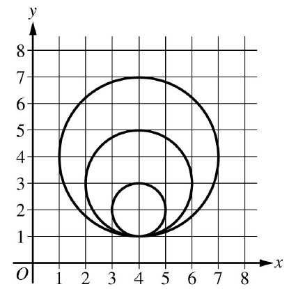

Consider the following procedure.
| Procedure Call |
Explanation |
| drawCircle(xPos, yPos, rad) |
Draws a circle on a coordinate grid with center (xPos, yPos) and radius rad |
The drawCircle procedure is to be used to draw the following figure on a coordinate grid.

Which of the following code segments can be used to draw the figure?
The correct code segments correctly draws the three circles.
The code segment first draws a circle at \((4,4)\) with radius \(3\). The y and r values then decrease by \(1\).
The process repeats and the next circle drawn is at \((4,3)\) with radius \(2\). The y and r values decrease by \(1\) again.
The final circle is drawn at \((4,2)\) with radius \(1\).